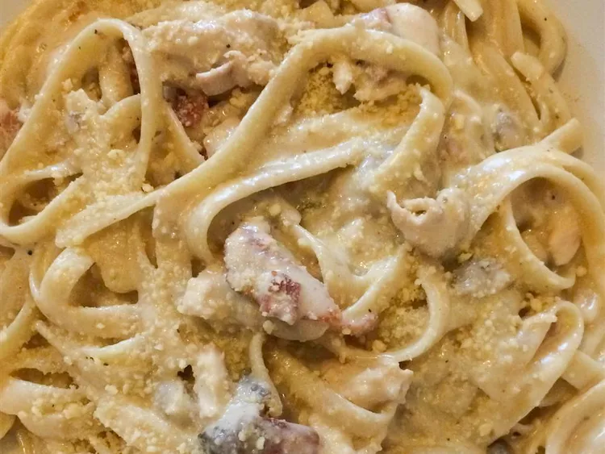

Chicken Fettuccini

Description
This recipe will show you how to make chicken fettuccini in 2 easy steps, using the ingredients provided.
Ingredients
- 8 ounces fettuccini pasta
- 2 tablespoons butter
- 3 skinless, boneless chicken breast halves cut into chunks
- 8 ounces mushrooms, slices
- 1 teaspoon garlic salt
- 1/8 teaspoon ground black pepper
- 1 1/2 cups heavy cream
- 1/4 cup grated parmesan cheese
Steps
- Boil a large pot of slightly salted water. Add fettuccine and cook for 8-10 minutes or until al dente;drain.
- Meanwhile, cook butter in a large skiller and brown chicken and mushrooms until chicken is cooked.
Season with garlic, salt, and pepper.
Add whipping cream and cook until thick, stirring constantly.
Add parmesan cheese when at desired consistency. Serve over noodles.